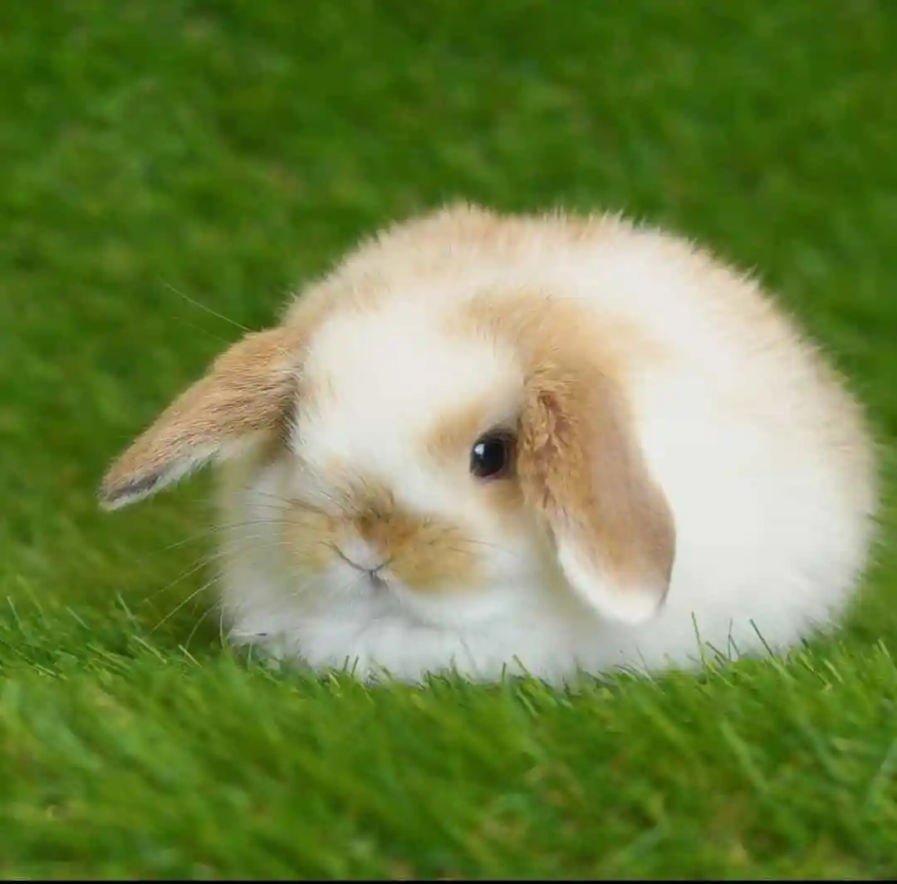
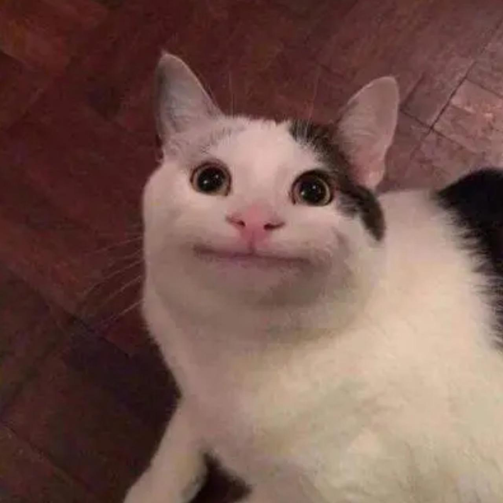

Cucurella
DisponibleEspecie: Gato | Edad: 2 años | Tamaño: Mediano
Cucurella fue rescatado cerca de Madrid. Es dinámico, amigable, súper jugueton y convive muy bien con otros gatos. Solo come paella.
Postular AdopciónConoce a nuestros rescatados que están buscando un hogar amoroso y permanente en Valparaíso y alrededores.
Especie: Gato | Edad: 2 años | Tamaño: Mediano
Cucurella fue rescatado cerca de Madrid. Es dinámico, amigable, súper jugueton y convive muy bien con otros gatos. Solo come paella.
Postular Adopción
Especie: Gato | Edad: 2 meses | Tamaño: Pequeño
Licenciado Pedro es un gato reservado al principio, pero muy ronroneador cuando toma confianza. Le encantan las series de criminalistica.
Postular Adopción
Especie: Gato | Edad: 3 años | Tamaño: Mediano
Un gato esponjoso y cariñoso que ama estar acurrucado en el sillón. Ideal para departamentos o casas tranquilas.
Postular Adopción
Especie: Perro | Edad: 3 años | Tamaño: Mediano
Bruno es un perro algo desconfiado al principio, pero muy leal una vez que se acostumbra.
Postular Adopción
Especie: Conejo | Edad: 6 meses | Tamaño: Pequeño
Conejo curioso y lleno de energía. Busca un hogar comprometido con su cuidado y salidas diarios.
Postular Adopción
Especie: Gato | Edad: 5 años | Tamaño: Grande
Simona es sarcástica, sonriente y busca siempre compañía humana. Ya está esterilizada y vacunada.
Postular Adopción